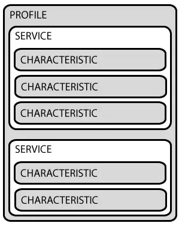

BLE低功耗蓝牙通信
BLE低功耗蓝牙
首先要分清楚BLE分为主设备和从设备，从设备作为Server将自己广播出去，主设备作为Client去连接从设备
参数
-
BluetoothDevice是蓝牙连接的设备。
-
BluetoothGatt是一个蓝牙连接的协议，它定义两个BLE设备通过叫做 Service 和 Characteristic 的东西进行通信，使用它可以进行对蓝牙的一系列操作，可以通过bluetoothDevice.connectGatt(this,false,callback)返回的gatt来获得。一个gatt中有多个service，一个service中有多个characteristic，如下图：

注意，GATT 连接是独占的。也就是一个 BLE外设同时只能被一个中心设备连接。一旦外设被连接，它就会马上停止广播，这样它就对其他设备不可见了。当设备断开，它又开始广播。
-
BluetoothGattService是一个蓝牙服务，一个gatt中有多个service，可以从bluetoothGatt.getService(Service_UUID)来获得。
-
BluetoothGattCharacteristic是一个蓝牙特征值，一个service中有多个characteristic，可以从service.getCharacteristic(Characteristic_UUID)来获得。通过对characteristic.setValue(value)的操作可以写入数据。
-
UUID是对设备的一个标识，service、characteristic都有其自己的UUID，主从设备间的的UUID应经过协商后保持一致。
Client端
- 先拿到
bluetoothManager
| val bluetoothManager = application.getSystemService(Context.BLUETOOTH_SERVICE) as BluetoothManager // application是自带的系统组件，Activity、Service等中都有
|
- 再拿到
BluetoothAdapter
| btAdapter = bluetoothManager.getAdapter();
// 也可以通过BluetoothAdapter.getDefaultAdapter()获得
|
- 开始扫描蓝牙设备
| btAdapter.startLeScan(BluetoothAdapter.LeScanCallback);
|
- 从
LeScanCallback中得到BluetoothDevice
| private class LeScanCallback:LeScanCallback(){
override fun onLeScan(device : BluetoothDevice, rssi : Int, scanRecord : byte[]) {
// 保存当前设备device
}
}
|
- 用
BluetoothDevice得到BluetoothGatt
| gatt = device.connectGatt(this, true, gattCallback)
|
- 获取对应的
service
| service = gatt.getService(Service_UUID)
|
- 获取对应的
Characteristic
| characteristic = service.getCharacteristic(Characteristic_UUID)
|
- 此时就可以对
characteristic写入数据了
| characteristic.setValue(value)
|
- 给
server发送数据
| gatt.writeCharacteristic(characteristic)
|
Server端
- 同样的，先拿到
bluetoothManager
| val bluetoothManager = application.getSystemService(Context.BLUETOOTH_SERVICE) as BluetoothManager // application是自带的系统组件，Activity、Service等中都有
|
- 再拿到
BluetoothAdapter
| btAdapter = bluetoothManager.getAdapter();
// 也可以通过BluetoothAdapter.getDefaultAdapter()获得
|
- 新建一个
characteristic
| characteristic = BluetoothGattCharacteristic(Characteristic_UUID,BluetoothGattCharacteristic.PROPERTY_WRITE,
BluetoothGattCharacteristic.PERMISSION_WRITE) // 后面的属性是自带的，有NOTIFY、READ、WRITE，选择多个可以用or连接
characteristic.setValue(value) // 同理，可以在这里设置要传递的参数
|
- 新建一个
service
| service = BluetoothGattService(SERVICE_UUID, BluetoothGattService.SERVICE_TYPE_PRIMARY)
|
- 为
service添加上这个characteristic
| service.add(characteristic)
|
- 获取/打开周边
1
2
3
4
5
6
7
8
9
10
11
12
13
14
15
16
17
18
19
20
21
22
23
24
25
26
27
28
29
30
31
32
33
34
35 | gattServerCallback = GattServerCallback() // 回调
gattServer = bluetoothManager.openGattServer(app,gattServerCallback)
// GattServerCallback回调
private class GattServerCallback : BluetoothGattServerCallback() {
// 连接状态发生改变
override fun onConnectionStateChange(device: BluetoothDevice, status: Int, newState: Int) {
super.onConnectionStateChange(device, status, newState)
val isSuccess = status == BluetoothGatt.GATT_SUCCESS
val isConnected = newState == BluetoothProfile.STATE_CONNECTED
if (isSuccess && isConnected) {
// ... 记录当前设备等
}
}
// 接收Client写过来的数据
override fun onCharacteristicWriteRequest(
device: BluetoothDevice,
requestId: Int,
characteristic: BluetoothGattCharacteristic,
preparedWrite: Boolean,
responseNeeded: Boolean,
offset: Int,
value: ByteArray?
) {
super.onCharacteristicWriteRequest(device, requestId, characteristic, preparedWrite, responseNeeded, offset, value)
if (characteristic.uuid == MESSAGE_UUID) {
gattServer?.sendResponse(device, requestId, BluetoothGatt.GATT_SUCCESS, 0, null)
val message = value?.toString(Charsets.UTF_8)
Log.d(TAG, "onCharacteristicWriteRequest: Have message: \"$message\"")
}
}
}
|
- 把
service添加给周边
| gattServer.addService(service)
// 可以通过notifyCharacteristicChanged向Client传递消息
gattServer.notifyCharacteristicChanged(device, characteristic, false);
|
- 获取广播
| advertiser = adapter.bluetoothLeAdvertiser
|
- 开始广播
1
2
3
4
5
6
7
8
9
10
11
12
13
14
15
16
17
18
19 | advertiseCallback = DeviceAdvertiseCallback() // 广播回调
advertiser.startAdvertising(settings, data, advertiseCallback);
// 广播回调实现
private class DeviceAdvertiseCallback : AdvertiseCallback() {
//失败
override fun onStartFailure(errorCode: Int) {
super.onStartFailure(errorCode)
// Send error state to display
Log.d(TAG, "Advertising failed with error: $errorCode")
}
// 成功
override fun onStartSuccess(settingsInEffect: AdvertiseSettings) {
super.onStartSuccess(settingsInEffect)
Log.d(TAG, "Advertising successfully started")
}
}
|
最后更新: July 16, 2022 10:57:39